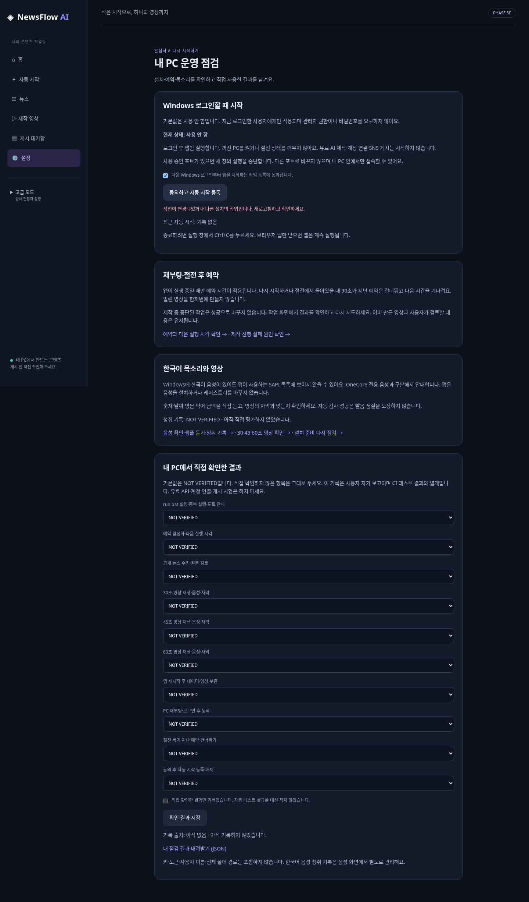

Windows 자동 시작과 내 PC 운영 점검. 실제 앱 화면 및 합성 제작 영상 자료입니다.
| 항목 | 결과 |
|---|---|
| Cloud 전체 pytest | 2,330 passed / 8 skipped / 0 failed |
| Windows 전체 검증 | 2,335 passed / 3 skipped / 0 failed · Windows Actions SUCCESS |
| 실제 사용자 Windows 11 · 재부팅 · 한국어 청취 품질 | NOT VERIFIED |
| 실제 유료 AI · OAuth · SNS · OS 작업 등록 | 실행 0건 |
Cloud Chromium에서 캡처했습니다. 자동 시작 등록 동선은 Fake OS 어댑터로 검증했습니다.
변경된 작업에 대한 요청은 거부하고, 새로고침 후 확인할 수 있도록 안내합니다. 자동 재전송하지 않습니다.

합성 뉴스로 예약 실행하여 실제 생성한 MP4입니다. 사람의 한국어 발음·영상 품질 평가 자료를 대신하지 않습니다.
이전 실행의 예약 POST 실패 1건은 원인 미확정입니다. 최종 동일 검사는 통과했으며 이전 실패를 해결된 것으로 처리하지 않습니다. 상세 보고서에 실패 이력과 진단 근거를 기록했습니다.
기존 run.bat 실행 후 설정 → 내 PC 운영 점검을 열어 주세요. 자동 시작은 사용자 동의 후에만 등록합니다. 모든 직접 확인 항목의 기본값은 NOT VERIFIED이며 유료 API·SNS 실행은 시험하지 않습니다.
ZIP을 모두 압축 해제한 뒤 이 파일을 여세요. 이 HTML의 사용자 Windows 파일 열기·재생은 NOT VERIFIED입니다. 위 재생 검증은 실제 앱의 HTTP GUI에서 수행했습니다.